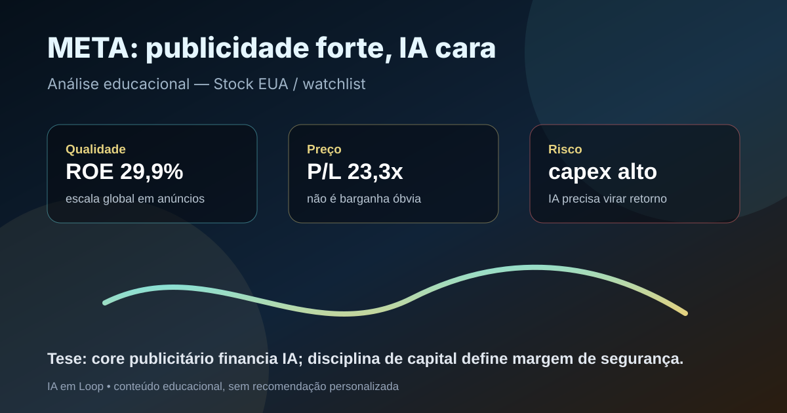

16/09: META, Meta e o custo da inteligência artificial
Meta está na watchlist permanente dos Estados Unidos e combina uma máquina publicitária global com um ciclo pesado de investimento em inteligência artificial. A pergunta central é direta: o lucro do core ainda compensa o capex crescente de IA, ou o preço já exige retorno demais?

A tese de Meta não é apenas “empresa de IA”. É publicidade com escala, dados de engajamento, distribuição global e uma conta de infraestrutura que precisa provar retorno.
Resposta curta: qualidade alta, mas o capex virou a variável decisiva
Na base local de fundamentos de stocks EUA com data-base de 06/09/2026, META aparece com preço de US$ 616,77, valor de mercado de aproximadamente US$ 1,57 trilhão, P/L de 23,26, P/L projetado de 17,64, EV/EBITDA de 14,53, ROE de 29,85% e dividend yield de 0,34%.
Na watchlist permanente EUA de setembro, META aparece como empresa de comunicação digital, internet e informação, com ROE de 29,85% e dividendo ainda pequeno. O caso é de qualidade e escala, não de renda: a principal fonte de retorno continua sendo crescimento, recompras, margem operacional e capacidade de transformar IA em melhor publicidade e novos produtos.
O que os números recentes indicam
O release público do 2º trimestre de 2026 informou US$ 60,80 bilhões de receita, crescimento de 28% sobre o ano anterior. A companhia também reportou 3,60 bilhões de pessoas ativas diárias em sua família de aplicativos, alta de 3%, com impressões de anúncios crescendo 14% e preço médio por anúncio subindo 12%.
O contraponto aparece no mesmo documento: despesas totais de US$ 42,03 bilhões, aumento de 55%, e US$ 31,08 bilhões de capex no trimestre, incluindo arrendamentos financeiros. Para 2026, a empresa indicou capex anual de US$ 130 bilhões a US$ 145 bilhões. Esse é o centro da análise: a publicidade continua forte, mas a intensidade de capital subiu muito.
| Métrica | Fonte/período | Valor | Leitura |
|---|---|---|---|
| Receita | 2T26 | US$ 60,80 bi | crescimento forte |
| Pessoas ativas diárias | junho/2026 | 3,60 bi | escala global preservada |
| Impressões de anúncios | 2T26 | +14% | engajamento monetizável |
| Preço médio por anúncio | 2T26 | +12% | poder de precificação |
| Capex trimestral | 2T26 | US$ 31,08 bi | IA exige capital pesado |
| Capex previsto 2026 | guia da empresa | US$ 130 bi a US$ 145 bi | variável-chave da tese |
Por que Meta importa para a watchlist
Meta é relevante porque junta distribuição, atenção e infraestrutura. Facebook, Instagram, WhatsApp, Messenger e produtos adjacentes formam um ecossistema difícil de replicar. A publicidade digital se beneficia de escala, dados de intenção e ferramentas de mensuração; a IA pode melhorar recomendação, criação de anúncios, atendimento a empresas e produtividade interna.
Mas a mesma IA que aumenta a eficiência também encarece o negócio. Servidores, centros de dados, energia, chips, modelos e pessoal especializado transformam parte da tese em disputa de capital. Se os investimentos elevarem conversão de anúncios, automação para anunciantes e novos produtos, o capex pode ser justificável. Se apenas defender participação de mercado, a margem de segurança fica menor.
META merece acompanhamento prioritário na watchlist, mas não deve ser tratada como compra automática. A tese melhora se receita, margem e fluxo de caixa crescerem apesar do capex. A tese piora se a IA exigir investimento crescente sem retorno mensurável, ou se regulação, privacidade e Reality Labs consumirem caixa acima do esperado.
O que favorece e o que ameaça a tese
Favoráveis
• Escala global de usuários e anunciantes.
• Crescimento forte de receita no 2T26.
• Preço médio dos anúncios ainda subindo.
• ROE elevado e múltiplo menor que alguns pares de tecnologia.
• IA pode melhorar recomendação, segmentação e ferramentas para negócios.
Desfavoráveis
• Capex anual previsto de US$ 130 bi a US$ 145 bi.
• Reality Labs e apostas imersivas podem seguir consumindo caixa.
• Risco regulatório em privacidade, concorrência e conteúdo.
• Dependência de publicidade torna a tese sensível a ciclo econômico.
• Valuation exige execução, não apenas narrativa de IA.
Checklist para acompanhar daqui em diante
| Ponto | O que monitorar | Se piorar |
|---|---|---|
| Publicidade | crescimento de impressões e preço por anúncio | core perde força |
| Capex | ritmo trimestral e guia anual de infraestrutura | fluxo de caixa fica pressionado |
| IA | produtos com monetização clara para anunciantes e empresas | IA vira custo defensivo |
| Margem | despesas, lucro operacional e recompra | valuation deve contrair |
| Regulação | privacidade, antitruste e moderação de conteúdo | risco jurídico aumenta |
Conclusão
A resposta para a pergunta do post é: Meta ainda tem qualidade suficiente para justificar presença na watchlist, mas o retorno da IA precisa aparecer em caixa, não só em discurso. O negócio publicitário segue muito forte e os múltiplos não parecem absurdos frente ao crescimento; porém o capex projetado mudou o tamanho da aposta.
Na régua do IA em Loop, META é uma tese de acompanhamento com dois placares simultâneos: de um lado, usuários, anúncios, preço e margem; do outro, capex, regulação e perdas em apostas de longo prazo. Enquanto o primeiro placar financiar o segundo sem destruir fluxo de caixa, a qualidade prevalece. Se o investimento em IA crescer mais rápido que o retorno visível, a margem de segurança diminui.